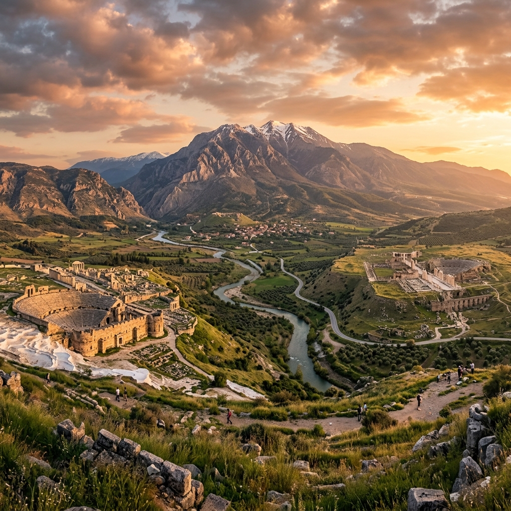

A Supremacia e Suficiência de Cristo
Um mergulho teológico, arqueológico e histórico na Carta aos Colossenses. Conectando a heresia combatida no século I com os dilemas e desafios das comunidades eclesiais contemporâneas.

Arqueologia & Contexto
Descubra a história da antiga cidade de Colossos e as curiosidades arqueológicas do Vale do Lico através de fatos e fotos.
A Heresia Colossense
Identifique os perigos do sincretismo místico e legalista combatido por Paulo respondendo a um Quiz teológico interativo.
Supremacia de Cristo
Explore o majestoso hino cristológico de Colossenses 1:15-20 com análises exegéticas detalhadas e versículo por versículo.
Contexto Histórico & Arqueológico
Conheça Colossos, a cidade do Vale do Lico que abrigou os destinatários da carta paulina.
Localizada na região da Frígia (atual Turquia), Colossos foi uma grande e próspera cidade nas rotas de comércio do Oriente, famosa por sua lã púrpura violeta. Contudo, no século I d.C., com a fundação das vizinhas Laodicéia e Hierápolis, Colossos perdeu relevância comercial e se tornou uma vila menor. Apesar de pequena, a igreja local enfrentou desafios teológicos cruciais que motivaram um dos escritos mais densos do Novo Testamento.
O Vale do Lico
Explore o mapa interativo e veja a relação geográfica entre as três cidades irmãs.
Selecione uma Cidade
Clique ou passe o mouse nos pontos interativos do mapa para ler os dados históricos e geográficos da região.
Contexto Histórico do Envio da Carta
Acompanhe a cronologia aproximada do ministério de Paulo e a redação da epístola.
A Heresia de Colossos & Quiz Teológico
Investigue as falsas doutrinas que assolavam a igreja e teste seus conhecimentos bíblicos.
O Sincretismo Colossense
A igreja de Colossos estava sendo infiltrada por um ensino confuso e enganoso, frequentemente chamado pelos teólogos de "Heresia Colossense". Esta não era uma única seita estruturada, mas uma mistura (sincretismo) de várias fontes religiosas:
Paulo combate vigorosamente essa doutrina, insistindo que **só Cristo** é a cabeça e a plenitude de tudo.
O Hino Cristológico (Colossenses 1:15-20)
Uma das maiores passagens teológicas da Bíblia sobre a natureza e obra de Jesus Cristo.
Estudo Teológico do Hino
Clique em qualquer verso à esquerda para ler a análise literária e exegética correspondente.
Conexões Eclesiológicas
Trazendo a mensagem de Colossenses do século I para as igrejas do século XXI.
Apresentação da Equipe
Integrantes do grupo responsáveis pelo trabalho do seminário teológico.
Trabalho em Grupo - Epístolas Paulinas
Apresentação para a classe em forma de painel interativo. Análise exegética e eclesiológica da Carta aos Colossenses aplicada às igrejas modernas.